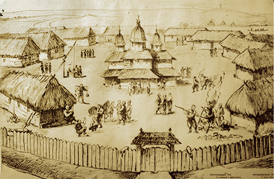
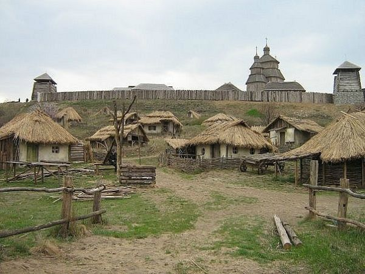
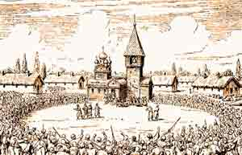
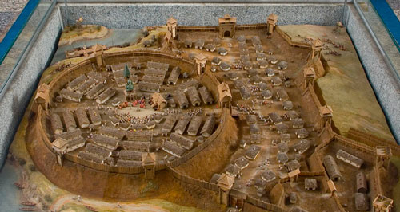

Пам'ятки України
Козацька доба
17 - 18 століттяЗапорізька січ
   
Цікаві факти:
Запоро́зька Сі́ч (або Запорі́зька Сі́ч) — укріплений осередок нереєстрового Війська Запорозького Низового другої половини XVI — кінця XVIII століття, що був розташований за порогами Дніпра. Збереглися відомості про сім Запорозьких Січей, що наслідували одна одній.
Запорозька Січ була обведена високими валами з частоколом і зрубами, на які ставилися гармати. Між валами була широка площа, на краю якої стояли курені — казарми, де мешкали запорожці. Козацька залога на Січі, що звалася також кошем, нараховувала кілька тисяч (іноді її чисельність доходила до 10 тис.) озброєних козаків. На площі містилася церква, будинки старшини, школа, господарські та військові споруд
Січова церква Покрови Пресвятої Богородиці і духовенство перебували під зверхністю Києво-Межигірської архимандрії. Площа біля церкви була центром суспільно-політичного життя Запорозької Січі, де відбувалися Січові ради тощо. Поза валами був Січовий базар, куди приїжджали купці зі своїми товарами. Січовики продавали тут продукти своєї праці — рибальства і мисливства. На Січі не було ні феодальної власності на землю, ні кріпосництва.